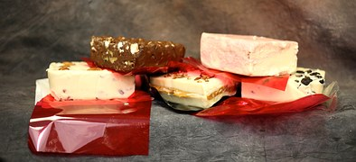

This is a page on the different verities of candy one can make on their spare time.
Peanutbutter fudge.
- 1/2 cup of butter
- 2 1/4 cups of brown sugar
- 1/2 cup of milk(I use evaporated)
- 3/4 cups of PB
- 2 tsp of Vanilla extract
- 3 1/2 powered(confectioners' )sugar
- pinch of salt
It's a simple process with simple ingrediants, here is how we make it.
- melt your butter,milk, and brown sugar together then add pinch of salt
- let boil for 2 minutes and stir
- remove from heat wait a bit then add your Peanut butter and vanilla.
- pour all of the mix((once well mixed and combined)) into confectioners' sugar and beat it until it's smooth.
- cool it, cut it, and enjoy it.
You can make the peanut butter fude in multiple ways as well, even add it to different types of candy or apply it to different things, either way, it's a wonderful treat.
Vanilla fudge.
- 12oz of white morsels
- 16oz vanilla frosting
- 2 tsp of vanilla extract.
Now it's simple, cook it a bit.
- Use a double broiler to melt your morsels.
- Add your vanilla frosting
- Mix and let melt adding vanilla extract
- Pour out and let cool then enjoy.
This is a wonderful base candy, something you mix with other candy to boost your flavor.
pepper mint.
- 12oz of white morsels
- 16oz vanilla frosting.
- 1 tbsp of crushed peppermints.
- 2tsp of vanilla extract
- 2tsp of peppermint extract.
- 8 drops of red food coloring.
This is one of the candies I make where the vanilla fudge is used as a base in a very light level.
